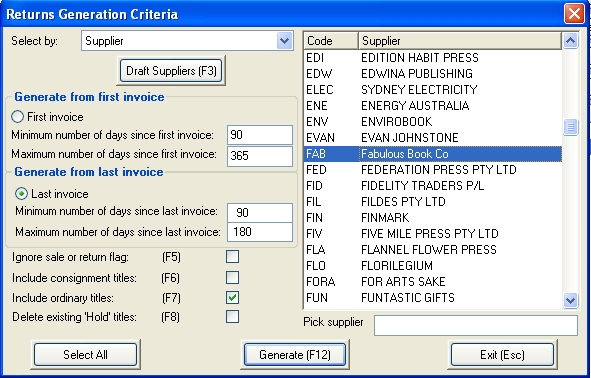
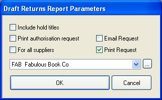
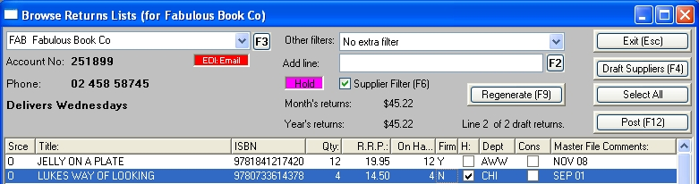
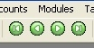
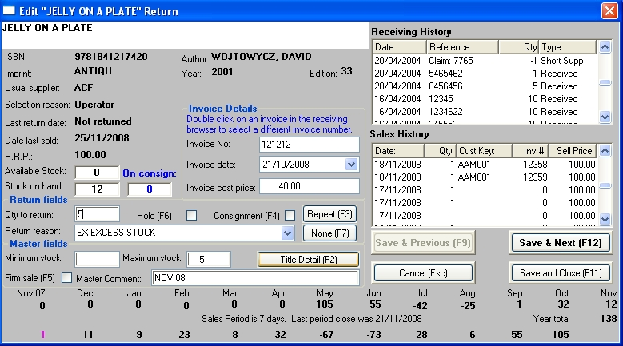
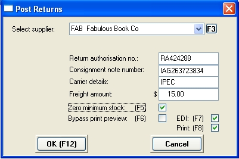
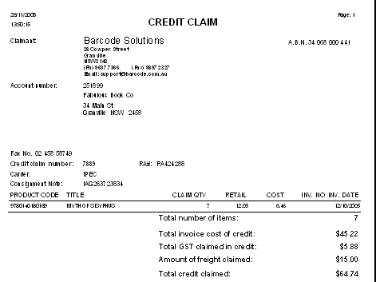
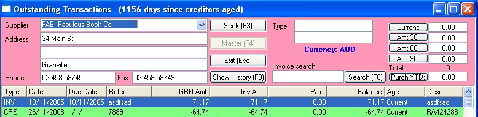

Generate a draft returns list
Open the Returns Generation window from the main menu: Purchasing/ Returns/Add-Change & select Regenerate F9.

You can choose to generate returns by Department, Supplier or Imprint. The default is by Supplier.
Generating returns by department.
This is a way of reducing your stock holding within a certain area. It is not a routine, regular procedure like normal monthly returns.
For example, if you had built up your children's area for Children's Book Week, you may now want to reduce stock to more normal levels afterwards.
Generating returns by supplier or imprint
These are the options to set to do your regular no fault returns. It is imperative that this is done routinely to ensure that old stock does not become non-returnable and that your stock holding does become not become excessive.
| Select departments, suppliers or imprints
|
Select the suppliers (or imprints or departments) in the list box. To make multiple selections, hold the Control key down while clicking on further suppliers etc. Click the Select F12 Generate to create a list.
| Setting the returns parameters
|
| · | Generate from First Invoice
|
| · | Generate from Last Invoice
|
The minimum and maximum number of days since Last/First invoice would normally be set to the supplier's terms.
For example, if the supplier's terms were that stock must be kept for three months, but can only be returned up to six months after supply, then set the parameters as follows:
Minimum days 90
Maximum days 180
The example applies to both options however it depends on which invoices (the oldest invoice date or the last invoice date) that the supplier allows to be used in calculating eligibility for return.
Select which method the supplier selected.
Generate from First Invoice: is used for those suppliers whose Sale or Returns condition (SOR) applies from date of publication (as the first invoice is close to the pub.date).
Generate from Last Invoice: is used for those suppliers who will allow returns after 3 months up to a specified period eg 180 days (6 months) from when the stock was invoiced, irrespective of publication date.
Title Options
Set the following flags:
Ignore sale or return flag
This refers to the Firm Sale flag on the title master. If you are confident of the accuracy of your title master leave this unchecked. Then only returnable titles will appear in the draft. In many shops, where various people have done data entry, the Firm Sale flag may be unreliable. In this case check the box to ignore the flag. This means that any non-returnable lines will have to be separated out manually.
Include consignment titles (if enabled)
This, when ticked, will allow consignment titles to be included in the returns list that will be generated.
Include ordinary titles
This is the default criteria selected and refers to all titles except consignment, firm sale or stock on hold.
Delete existing hold titles
This refers to any titles which may be on hold in the Draft Returns Lists. Depending on your practices, there may be say, damaged stock on hold awaiting returns authorisation. In that case leave the box unchecked, as you don't want these removed from the draft.
Note: any items in the draft returns file which are not 'on hold', will be deleted from the file when you re-generate. If there is anything in files you want kept there, make sure its 'hold' flag is set to true before re-generating.
Generate list
Click the Generate button to generate the Draft Returns List. Alternatively, click the Cancel button, or press the Escape key, to exit.
After generation, all stock lines that meet the criteria will be placed into Draft Returns, where you can check,process and post them.
Allocation of invoice numbers
Each time you receive goods from a supplier, the invoice number, invoice date and the cost price at the time of receiving are stored in the receiving history database.
When you generate returns, the system first finds what stock is available to return, and adds them to the returns draft.
It then allocates the original supplier invoice numbers against each title being returned.
It is assumed that the oldest copies receive first and so allocates the invoice number in reverse date order. Where the quantity being returned exceeds the quantity on the first relevant invoice for the date period, the excess is allocated to the next invoice and so on until all returns have an allocated invoice number.
For example, say you are returning stock of a title where you received a delivery of four in March and a further four in April. Say you sold two and wanted to return the six unsold copies. The system will return four copies against the March invoice and two against the April invoice.
The browser of the Draft Returns window will show two lines, one for each invoice number quoted.
Draft Returns List
The draft returns list is used to pick the stock from the shelves. From the main menu, select Purchasing/Returns/Reports and then click on Draft. The Draft Returns Parameters window will open.

Set your parameters
| · | Optionally check or uncheck the 'Include hold titles'.
|
| · | Uncheck the 'Include authorisation request' and Email Request boxes.
|
| · | Select the supplier or tick the 'For all suppliers' check box.
|
Click the OK button to run the report.
This report displays the titles listed by Department. After printing the report, pick the stock from the shelves and then edit the draft (see the instructions in the next section) for items not found or in unreturnable condition.
Note: You can choose to leave this stock on the shelf until the Returns Authorisation is received from the supplier, then print this list and pick what they approve.
Draft Returns window
The Draft Returns window is where you process your returns to supplier. Open the window from the main menu: Purchasing/ Returns/ Add-Change.

View all draft returns
If the Supplier Filter checkbox is not ticked, all draft returns will display in the browser. As you highlight a line in the browser, the details of that line's supplier are displayed in the upper part of the window. To filter on that supplier, tick the Supplier Filter (F6) checkbox.
Filter by supplier
Alternatively to filter on a supplier, select the supplier in the combo box. The draft returns list for that supplier will be displayed in the browser. Use can use the F3 button to open the Supplier search window.
Find suppliers with draft returns
To view a list of all suppliers with draft returns, click the Draft Suppliers (F4) button. A pop up window will display listing all suppliers with items in the draft. Select the supplier by highlighting it in the pop up list and clicking the OK button (or just double click on the supplier) and the new supplier's draft returns will display in the browser.
Other filters
To further filter the lines displayed, you can select, in the Other filters combo box:
| · | Invoice generated titles only: display only titles falling within the suppliers return parameters.
|
| · | Titles added from Title Master context (right mouse) menu 'Add to Draft Returns' option.
|
| · | Operator titles only: display only those titles added manually, rather than by the generation process.
|
| · | Returns unheld titles only. Titles generate on hold in the draft and are released to process on a return.
|
Adding a line to the draft
You can manually add a line to the draft. Just scan (or type) the barcode into the Add Line field. If the item is already in the draft, you will be asked whether to go to the existing record or to add a new line. If adding the new line, the Edit Draft Return window will open where you can enter the number to be returned, select the original invoice and amend other settings: see the Edit Draft Return window section below.
Alternatively, to add a new line, click on the F2 button or open the context(right mouse) menu and select 'Add new line'. The title master and Title Find windows will open where you can select the required product.
Deleting a line from the draft
To delete lines from the draft, select them in the browser and press the Delete key (or open the context (right mouse) menu and select 'Delete'
Draft returns browser
Column headings
Srce Source of the draft returns. Options are:
O Operator (manually entered)
I Invoice (generated in the Returns Generation window)
| T Added from Title Master (manually added via 'Add to Draft Returns' from context (right mouse) menu)
|
ISBN ISBN or catalogue number, depending on your configuration.
Qty Quantity to be returned.
RRP Recommended retail price.
On Hand Stock on hand.
Firm Firm sale flag set in the title master.
H On hold
Dept Sales department for this title (default sort order in screen)
Cons When set, this flag indicates a return of consignment stock (if enabled).
Comments Master file comments
Notes on the browser
| · | Items in the browser that are 'on hold' show with a magenta background.
|
| · | Use the navigation buttons on the toolbar to navigate through the browser.  |
| · | To open the title master for an item, select the line in the browser, open the context menu (by right clicking the mouse) and select 'View master'.
|
Context (right mouse) menu
Check the right mouse options in this screen. Most options are self explanatory.
Value: allows you to value the total of a draft claim before finalizing. It includes all unheld totals.
Skip to Dept: Returns generated sorted by Department in the list. This is a means of dropping down through the listed departments quickly, type the department code you wish to go to.
Print Draft: is an alternate means of printing RAs and picking lists (instead of going to the tool bar printer icon).
Items on hold
To toggle the 'on hold' flag of a line in the browser, double click on the browsers H (hold column). Placing an item on hold will stop it being overwritten during regeneration of the draft and will stop the line from being processed when posting returns.
Also see context (right mouse) menu options.
Editing a line in the browser
To edit a line in the browser, double click on it. The Edit Draft Return window will open. Here you can view the history of the title and enter the number to be returned, select the original invoice and amend other settings: see the Edit Draft Return window section below.
Posting
See the Post Returns section below for details.
Edit Draft Return window
To open the Edit Draft Return window, double click on a line in the browser of the Draft returns window. Here you can view the history of the title and enter the number to be returned, select the original invoice and amend other settings.

Editable fields
Draft returns fields
| ? | Qty: quantity being returned (can not exceed On Hand qty)
|
| ? | Hold (F6): toggle the draft return line on and off hold.
|
| ? | Consignment (F4): (if enabled) set the line as a consignment stock return.
|
| ? | Return reason: select a return reason from the drop down box. (Click the Repeat (F3) button to use the last reason used. Click the None (F7) button the clear the Return Reason field).
|
Invoice details
When generating a draft returns list, the program will allocate the original supplier voice for each line of the draft. You can edit this invoice number here. While you can overtype the invoice number and date, it is easier to find the invoice in the Receiving History browser at the top right of the window. Double click on the browser line. The invoice number, invoice date and invoice cost price fields will be overwritten.
Master fields
You can change some title master fields here
| · | Minimum stock
|
| · | Maximum stock
|
| · | Firm sale
|
| · | Title master comment
|
Information fields
The various fields on this window will give you the data you need to decide on the quantity of stock to return. Most of the fields are self explanatory except the sales history numbers displayed at the bottom of the window:
| · | The upper line is the monthly sales quantity for the previous 13 months.
|
| · | The bottom line is the sales quantity for the last 12 sales periods, displayed from the left. These periods, designated in the system set up, are usually set at seven days.
|
|
|
Printing a returns authorisation request
After preparing your draft list of returns, you will need to print a returns authorisation request for each supplier. This will list all the titles to be returned to the supplier, the return reason and the original invoice numbers, dates and pricing. You can have e-Comms email the requests to your suppliers if your supplier is setup with an email address and defined for EDI Pacstream or email. Pacstream does not support sending RAs but if there is an email address Bookscan will send these via email.
Open the Draft Returns Report Parameters window from the main menu:
Purchasing/ Returns/ Reports/ Draft.
Set your parameters
| · | Uncheck the 'Include hold titles'.
|
| · | Check the 'Include authorisation request'
|
| · | Optionally check or uncheck the Email Request and Print Request boxes.
|
| · | Select the supplier or tick the 'For all suppliers' check box.
|
Click the OK button to run the report. If you select the email option, the requests will be emailed to the suppliers if their email address is set in the supplier master, when
e-Comms runs.
Finalising your draft returns
| · | When you have received your returns authorisation from your supplier, if you have not already picked your stock edit your draft returns for lines which the supplier disallowed the return or where the stock has been sold in the meantime. This is done ion the Draft turns window (see the Draft Returns window section above).
|
| · | You can then print a list for picking the stock as per section above 'Picking list for Returns' and pick stock. You may have to edit the list again if items can not be found.
|
| · | Once you have your list completed you can use Context (right mouse)menu in browse list to "Value" the draft. This will value unheld items at cost , showing GST , number of items etc for you to verify your action with the RA before posting.
|
| · | Returns are posted in the Draft Returns window. This will create a credit claim on the supplier.
|
Posting returns
Open the window from the main menu: Purchasing/ Returns/Add/Change.
Select the supplier on the combo box.
Lines that are not to be included in the credit claim should be set to 'On hold' or deleted.
Click on the Post (F12) button. The Post Returns window will open.

Where applicable, enter the returns authorisation number, consignment note number and carrier, and any freight to be charged to the supplier.
If you wish the program to set the minimum stock level for the products in the claim to zero, tick the 'Zero minimum stock (F5)' check box. This will prevent the items being added to the draft for re-ordering, if you are using 'Min Stock ordering' and haven't returned all the stock. Be careful using this function if you are doing damaged goods type returns as it will stop the item re-ordering un the future.
You can choose to have the program email the credit claims (if the supplier's email has been set in the supplier master).
Note: It is probably more appropriate to print and send the credit claim with the goods as the Supplier will not process the claim until the goods are received. Set the flag to print the claim. You should always retain a copy of a credit claim to ensure it is followed up with the Supplier (administration).
Click the OK (F12) button to create the claim.

Effects of posting
Posting has the following effects:
| · | A credit claim is created (optionally, emailed to the supplier by Ebility e-Comms).
|
| · | The stock on hand in the title master is reduced by the quantity of the claim.
|
| · | The posted lines in draft returns are deleted.
|
| · | The stock movement is added to the stock history file. This can be viewed on the Movement History tab of the title master.
|
| · | The credit claim is stored in the returns history files from where it can be exported to the MYOB accounts package.
|
| · | Optionally the minimum stock level in the title master is set to zero.
|
| · | The credit claim is posted into the creditor transaction file (see diagram below)
|

Notes on the Creditors window:
| · | The credit claim is highlighted in green in the browser.
|
| · | The credit claim number ('7889') displays in the Reference column.
|
| · | The returns authorisation number displays in the Description column.
|
|
|
|
|
|
|
|
|
|
|
|
|
|
|